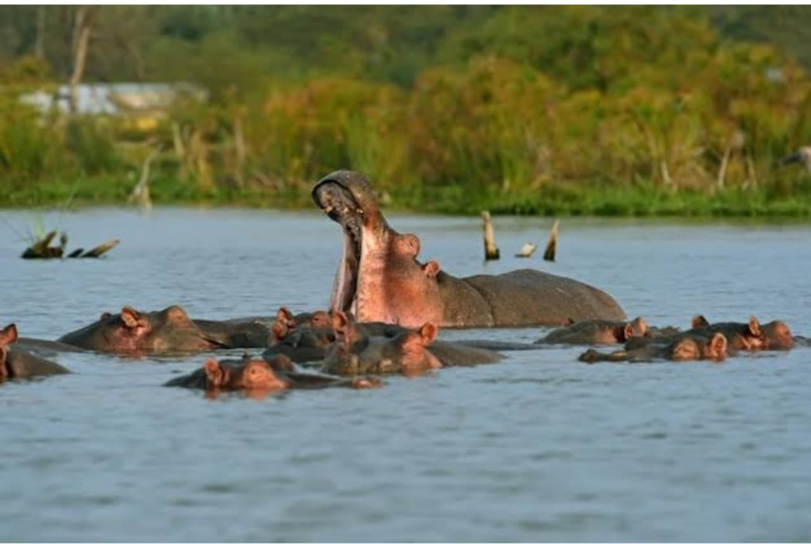

La Mare aux Hyppopotames de Bala
Description et Historique: Située à environ 500km de Bobo-Dioulasso et créer en 1937,la mare aux hippopotames est un lac qui fait partit de la reserve de biosphère de Bala qui s'etend sur une superficie de 16300 ha. La réserve a été créé autour d'un lac d'eau douce qui abrite une centaine d'hippopotames.Il est clasée à la convension de Ramsar comme zone humide d'importance internationale.La mare constituee un paradis pour les oiseaux migrateurs,on compte plus de 160 espèces d'oiseaux dont 27 espèces d'oiseaux d'eaux et 133 espèces d'oiseaux savanicole.On y trouve des espèces plus frequentes au Burkina Faso comme le Jacana nain,le Colombar maitsou,le Trogon narina et biens d'autres espèces rares.